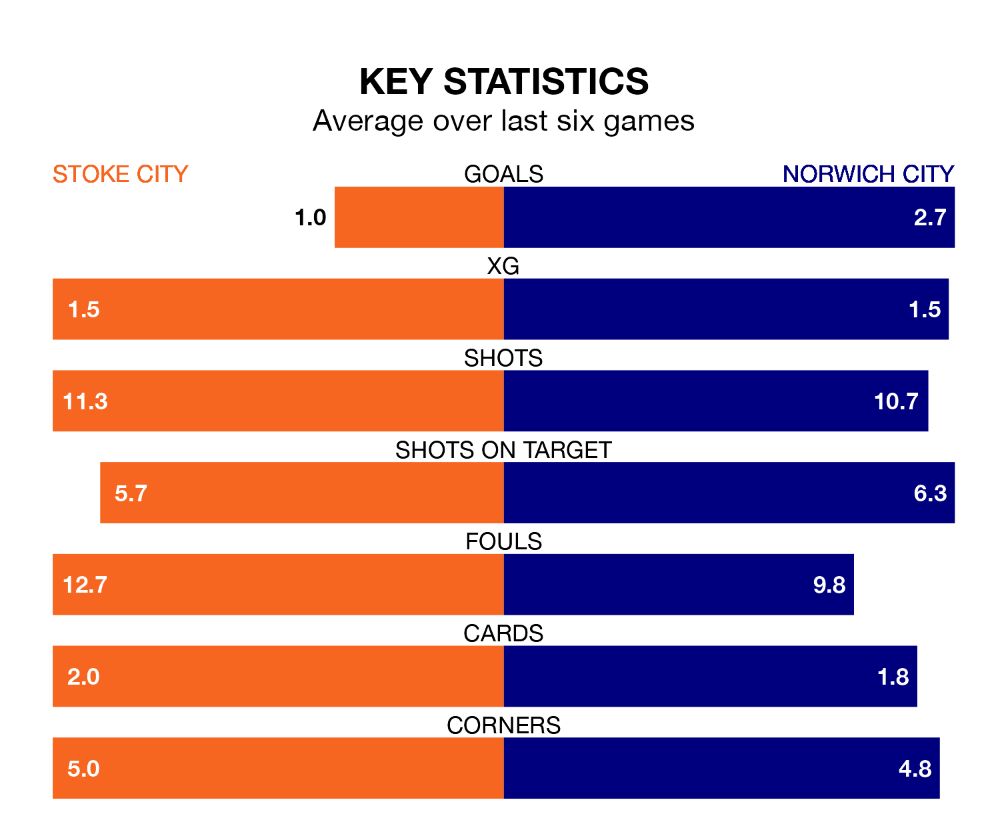

Norwich City travel to Stoke City on Saturday in EFL Championship.
The visitors come into the game on the back of a win in their last match, having beaten Rotherham United 5-0 at home, with two goals from Gabriel Sara, one from Jakob Sørensen, one from Joshua Sargent and one from Borja Sainz Eguskiza.
The Potters also won their last match, 2-1 against Preston North End, with their goals scored by Andrew Hughes and Luke McNally.
With 35 goals in 37 games so far this season, Stoke are the league's third-lowest scorers with 0.9 goals per game. And they are conceding at an average rate, letting in 50 goals at a rate of 1.4 per game.
Norwich, meanwhile, are above average scorers, with 1.8 goals per game, compared to a league average of 1.4. They have conceded 1.5 goals per game.
In the last 10 years, Stoke and Norwich have played each other on nine occasions. Stoke won two of them, Norwich four, and they drew three times.
On average, the Potters scored 1.2 goals and the Canaries 1.7 in those matches.
Their last meeting was on September 16, when Norwich won 1-0 at home.
Stoke City are 19th in the table after 37 games, of which they have won 11 and drawn eight, earning 41 points.
Norwich City are 13 places ahead of the Potters in sixth, with 17 wins and seven draws putting them on 58 points.
The hosts are in mixed form in EFL Championship, with three wins and three losses from their last six games.
With four wins and a draw over that period, the Canaries' form is better – they have taken 13 points from 18, compared to Stoke's nine.
In Sargent and Jon Rowe, the away side have two of the league's sharpest shooters so far this season. They have notched 12 goals each, to sit eighth in the scoring charts.
Stoke's top scorer, with five goals in 25 games, is André Vidigal.
Saturday's match will be refereed by Gavin Ward, who has taken charge of 19 EFL Championship games so far this season, issuing two red cards and booking 77 players. He has awarded two penalties.
The last Stoke game Ward refereed was a 3-1 away loss to Blackburn Rovers on February 10. His last Norwich match was their 2-1 win at home against Coventry City on February 3.
Updated: 15:10 (UTC), 15/03/24